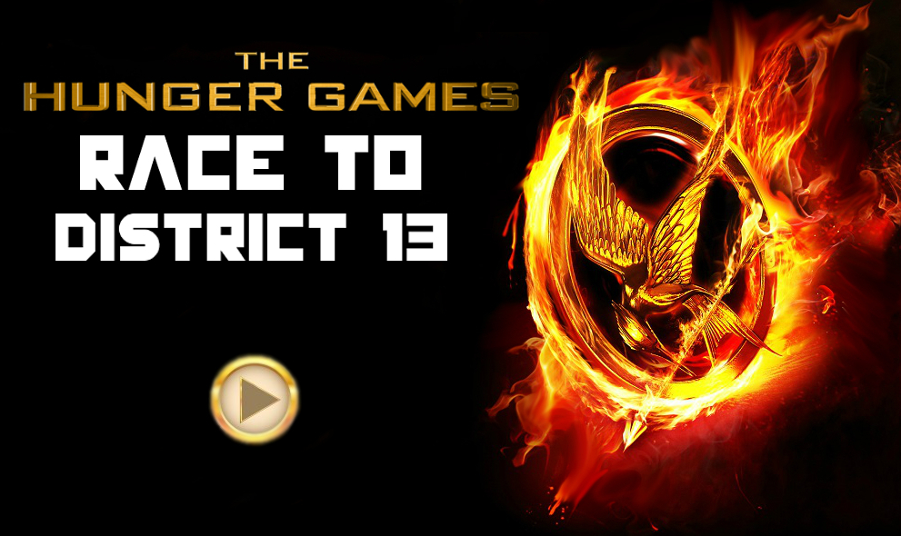
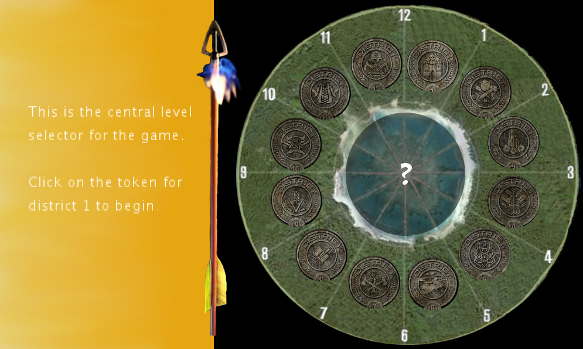
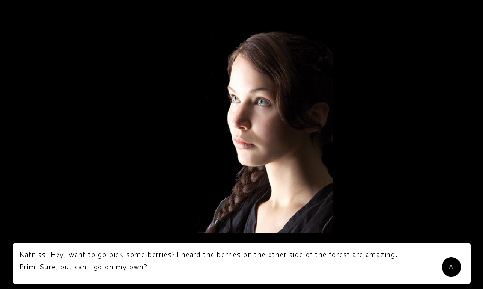
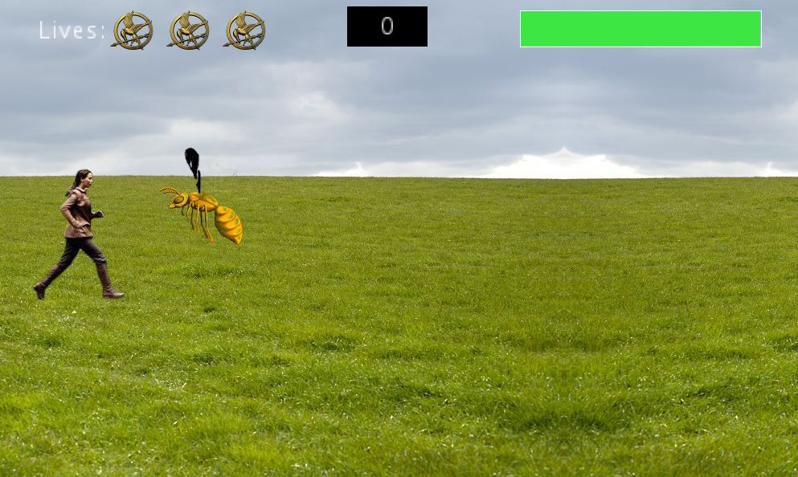

COSMOS Summer Program
COSMOS is the California
State Summer School for Mathematics and Science. I spent a month at the UC
Santa Cruz campus as a part
of the "Video Game Design" cluster of the program. There, I worked with
Processing, a language similar to Java; Unity, a 3D game design software;
and GameMaker, a block-by-block programming tool similar to AppInventor.
The first project I developed was an RPG (role-playing game) that involved
space-bar-shooter mechanisms and keyboard movements. The game was created
using GameMaker, and modeled an airplane shooter game.
I also developed several games using Processing. One of the programs I
created demonstrated the principle of flocking, or eventual grouping
of objects. Another game followed a Hunger Games theme, and merged
narrative and ludic (gameplay) elements to carry the player through the
game and to the final objective. The mechanisms included using the arrow
keys to move around the screen, and using the space bar to shoot.




The final project for the COSMOS program involved 3D video game design.
Working in a team of 4, I created a game in which
the central character is a humanoid that
is trying to discover clues to its identity. Similar to the Hunger
Games Processing game that I developed, the 3D game merged narrative
elements with the traditional gameplay, to create a unique user experience.